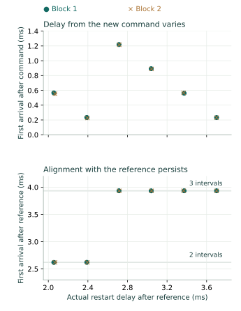

Question and rationale
The queue-timing return separated variable first-entry delay from later spacing near 1.31 ms. The next question is whether stop/restart establishes a new timing origin or whether arrivals retain alignment with the preceding cadence. Deliberately changing the restart offset tests this relation directly.
The capability under investigation is controlled component-local acquisition toward physical Seigsit creation and transfer. The queue and SD journal record the apparatus's behavior; physical Seigsit transport remains to be established.
Method
Retain internal input 4, ADC DIV=0x00ffff00, FCS=0x5, exact stopped admission, and the established clock and route controls. Before every condition, observe continuous acquisition for four milliseconds. Select the last unit increase in queue occupancy as an arrival reference, stop, require READY with start fields clear, and drain locally to an empty queue.
The reference interval extends from the preceding read's first counter to the changed read's last counter. Wait until its upper counter plus a requested offset of 2,000, 2,328, 2,656, 2,984, 3,312 or 3,640 microseconds. The 328-microsecond step spans approximately a quarter of the previously observed period. Record the wait and actual command-access counters separately. A missed deadline, failed reference, invalid anchor or failed drain refuses the restart.
At each offset, compare a quiet continuous restart with an observed continuous restart, each lasting four milliseconds from command-access completion. In block 1 the offsets ascend, with quiet before observed; block 2 reverses the entire order. No-command and single-command controls use the 2,656-microsecond offset at the block boundaries. There are 28 conditions in one boot: twelve observed continuous, twelve quiet continuous and four controls. Every preceding reference is observed; only the restart window is quiet in a quiet condition.
No SD persistence occurs between the reference acquisition and completion of the restart's stop attempt. No FIFO consumption occurs within either acquisition window. Persist the combined report after stopping, recover the restart queue, then retain the existing two-millisecond stopped interval and empty/ready checks. Completed failures select staged restoration. Each observed window permits at most 262,144 completed reads and sixteen changes; each drain permits at most sixteen consumed entries. These software capacities do not establish physical queue depth.
Assessment criteria
Require complete accepted execution, correct zero-entry and one-entry controls, error-free queue recovery, empty stopped checks and restoration. Continuous counts and timing are measured outcomes, not prescribed pass values. Retain transient queue errors even if later observations recover.
Bound later reference spacing from consecutive observation intervals. Test whether the first restarted arrival can fall at an integer continuation of that spacing after the selected reference. Compare this with its delay from the new command. This is conditional interval compatibility, not direct observation of an internal phase signal. Quiet conditions support a count comparison but provide no within-window first-arrival timestamp.
Preparation and implementation
Candidate EDC2F76A7A2C appends 109 literal AArch64 instruction words at byte 2552 of the RP1 SEIGRASM source. Its 380-cell report contains a timing/outcome header and the existing reference, local-drain and restart reports. The preceding instruction bytes and seven other instruction sources are unchanged. The PC tools package authored instructions and decode evidence; no foreign compiler produces the target implementation.
All 31 image-bound checks passed with supplied responses, including local drain and deadline sequencing, competing supplied timing models, quiet windows, controls, failure paths, complete journalling and a recording failure after stopping. These checks establish software behavior under supplied conditions. The frozen protocol specifies 217 operations, at most 1,957 records and a three-minute powered procedure. Two installation readbacks matched the prepared image.
ROM/EEPROM entry, AArch64 execution and counter, SD and PCIe/RP1 interfaces, retained bridge configuration and existing component firmware state remain dependencies. No firmware-service request occurs in this acquisition sequence. This experiment does not replace those dependencies.
Results
All 1,957 records, 217 operations and 28 conditions completed with accepted execution. Both no-command controls remained empty; both single-command controls retained one entry. All twelve quiet and all twelve observed continuous restarts retained three entries. The preceding reference acquisitions retained three entries in 26 conditions and four in two.
Every observed continuous restart remained compatible with continuation of its preceding arrival cadence. At offsets 2,000 and 2,328 microseconds, the first restarted entry aligned with two reference intervals after the selected arrival; at the four longer offsets it aligned with three. The new command's first-entry delay changed substantially with the offset and showed the same pattern in the reversed block.
| Requested offset, µs | Block 1 latency, µs | Block 2 latency, µs | Reference intervals |
|---|---|---|---|
| 2,000 | 563.185–568.241 | 551.963–557.667 | 2 |
| 2,328 | 231.519–236.630 | 224.741–230.241 | 2 |
| 2,656 | 1216.315–1221.426 | 1213.444–1218.556 | 3 |
| 2,984 | 889.722–894.759 | 886.426–891.444 | 3 |
| 3,312 | 557.704–562.815 | 563.500–568.537 | 3 |
| 3,640 | 230.000–235.130 | 228.833–233.981 | 3 |

All 58 later-spacing brackets from the references overlap between 1,309.111 and 1,312.667 µs. Including 24 later-spacing brackets from observed continuous restarts gives 82 brackets with a common interval of 1,309.278–1,312.426 µs. This reports interval agreement near 1.31 ms, not a fitted exact period. Every observed occupancy change was a unit increase.
Controls and recovery
Quiet and observed continuous restarts each retained three entries at every offset in both blocks. Their agreement supports the count comparison; it cannot establish absence of a polling effect on exact arrival timing. All first observed continuous entries occurred more than 224 µs after their commands, consistent with three regularly spaced entries fitting in the four-millisecond window.
The single-command controls bracketed first appearance at 1.389–6.519 µs and 1.389–6.444 µs. Neither was compatible with an integer continuation of its preceding reference cadence. Both no-command windows recorded zero changes. Thus the continuous timing pattern is distinguishable from these controls.
All active final observations agreed with stopped FCS, and stopped occupancy agreed with subsequent recovery. No observation capacity, queue overflow, queue underflow or per-entry error was recorded. All 56 recoveries ended empty, subsequent stopped checks remained empty and ready, and cleanup recovered zero remaining entries. Across references and restarts, 160 retained raw codes ranged from 845 to 860. These codes have no calibrated temperature or voltage interpretation in this experiment.
Timing boundaries
All restart deadlines were reached, with counter-wait overshoot of 1–27 ticks (0.019–0.500 µs). Local reference drains took 9.241–12.185 µs. Each wait began at least 1.102 ms before its deadline.
The actual command starts later than the requested wait deadline. Setup between wait completion and command-access start took 52.611–66.019 µs. The analysis uses the actual recorded access brackets, preserving this overhead instead of treating requested offsets as exact command times.
Restart command-end to stop-start intervals ranged from 4,001.611 to 4,003.870 µs. Observed reference and restart windows completed 1,600–1,831 FCS reads; quiet restart windows completed none. Stops and readiness checks completed before recovery.
The coordinator interval was 4,136,709,035 ticks, 76.605723 seconds. It excludes boot-loader time and terminal-record persistence. The actual powered duration was not independently measured.
Restoration and evidence integrity
ADC control, queue control, divider and clock control were each restored with one accepted write. Final FCS retained only EMPTY=0x100. Root link, root command, RP1 identity and the surrounding clock fields matched their preceding observations.
Two read-only 64 MiB captures matched. Independent reconstruction verifies record identity, CRC and complement, senary fields, ordinals, all 380-cell reports and their nested stages, reference selection, deadline arithmetic, command ordering and terminal counts. All 30,747 unused reservations match preparation. The partition table, executable and boot configuration are unchanged.
Seven other boot-volume sectors differ and a System Volume Information directory is present. Writer and timing remain unestablished; acquisition made no SD write. A terminal record cannot independently prove its own target readback.
Interpretation and next investigation
Inference: continuous acquisition retains a timing relation across the tested stop, drain and restart sequence. Deliberately shifted commands changed command-relative latency, while all twelve observed first arrivals remained compatible with continuation of the immediately preceding cadence. One fixed command-to-first-arrival delay cannot satisfy these disjoint brackets. The reversed block reproduces the pattern within this boot.
The result narrows the earlier count variation: waiting for the next recurring arrival after an unsynchronized command can change how many entries fit in a short window. It does not identify the physical owner of that cadence. Divider progression, conversion scheduling and queue visibility remain distinguishable candidate mechanisms. Quiet timing, independent analog freshness and behavior across boots or other silicon remain unestablished.
Proposed next investigation: change only the ADC pacing divider while retaining arrival-referenced restart observations and the same controls. Compare measured spacing and reference alignment at each setting, include the present setting before and after the intervention, and restore its entry configuration. Choose bounds that retain the whole queue without overflow. Scaling with the selected divider would connect the cadence to an experimentally controlled component setting; failure to scale would require investigating another timing source. This adds a causal intervention rather than another identical count test.
For Hyphos, this is evidence for how the present component responds to control and how its timing can be characterized. Independent physical-state calibration, exclusive component ownership, firmware replacement and physical Seigsit creation and transfer remain separate development requirements. The present journal does not satisfy those relations.
Evidence and provenance
Preparation identity: edc2f76a7a2c2ec4d87ef6f335baffbc69754dbb94b21dfbac15b641686f3487. Returned capture SHA-256: c7c1de662b21781523135cf0d95dd9ee6911296ac542b1d9517eaef65a9b5e71.
Physical-return checks reconstruct the raw journal independently and reject missing recovery or altered offset definitions. The supplied-response preparation checks retain their separate evidential role.